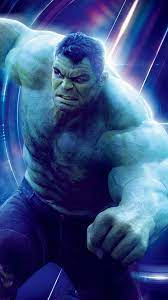
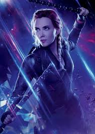

|
|---|
|  |  |  |
|---|
The Avengers Initiative was the brainchild of S.H.I.E.L.D. Director Nick Fury. He first approached Tony Stark with the idea, following Tony’s defeat of Obadiah Stane and his subsequent public announcement that he was Iron Man. Fury kept his eye on several potential members, as Bruce Banner struggled with life as the Hulk, the Asgardian Thor appeared on Earth, and Steve Rogers, AKA World War II hero Captain America, was discovered alive decades after his apparent death. In the meantime, some of S.H.I.E.L.D.’s most skilled members, Black Widow (Natasha Romanoff), and Hawkeye (Clint Barton), were making a name for themselves and impressing Fury.
Once the Asgardian trickster god Loki arrived on Earth and absconded with the massively powerful object known as the Tesseract—possessing Hawkeye and turning him into his brainwashed pawn in the process—Fury found it necessary to finally bring together his potential super team, calling in Romanoff, Banner, Rogers and Stark. Captain America and Iron Man, assisted by Black Widow, were able to capture Loki, but during their flight back to S.H.I.E.L.D., Thor arrived, attempting to bring his brother back to Asgard to face justice. A fight ensued between Thor and Iron Man, but Captain America broke it up, and the group all returned with their prisoner, Loki, to the S.H.I.E.L.D. Helicarrier.
While Stark and Banner found some common ground through their love of science, the would-be team were at odds as they discussed their next course of action, and arguments escalated in the wake of discovering that S.H.I.E.L.D. had been using the Tesseract to recreate dangerous HYDRA weapons.
Loki revealed that it was his plan to be captured all along and triggered Banner to turn into the Hulk. While engaging in a fight with Thor, Hulk nearly destroyed the Helicarrier, before crashing down to Earth. Escaping in the chaos, Loki then ejected Thor from the Helicarrier in his own enclosed cell and retrieved his scepter, killing Phil Coulson with it. Black Widow fought Hawkeye, who had arrived to help Loki, managing to bring her friend back to his true self in the process. Loki continued on to New York where, with the help of the brainwashed Dr. Erik Selvig, he opened a portal into space, unleashing a devastating Chitauri army.
Motivated by the tragic death of Phil Coulson, Iron Man, Black Widow, Captain America, and Hawkeye all headed to New York to fight Loki and his invading Chitauri forces, and were soon joined again by Thor and Hulk, with the six heroes truly assembling as the Avengers for the first time.